경북 영덕 · 한옥스테이
산과 들 사이,
하루 한 팀을 위한 한옥
뒤로는 산이 감싸고 앞으로는 들이 펼쳐지는 자리.
한옥 한 채와 그 풍경을 온전히 내어드립니다.
01 / 04 산과 들
The House
한가로이 머무는 집,
한존재
초록이 겹겹이 둘러싼 자리에 한옥 한 채가 놓여 있습니다.
기와지붕 위로 햇살이 내려앉고, 들판은 계절마다 빛을 바꿉니다.
머무는 동안 마주하는 모든 풍경을 오직 한 팀만을 위해 준비합니다.
천천히 걷고, 오래 머물고, 아무것도 하지 않아도 좋은 하루.
한가할 한
서두르지 않는 시간
있을 존
그 자리에 온전히 머무름
집 재
마음을 쉬게 하는 집
01 — One Team a Day
1,100평 잔디 마당과
한옥 한 채를 온전히
하루 한 팀만 모십니다. 마당도, 누마루도, 산을 바라보는 풍경도 머무는 동안은 모두 손님의 것입니다.
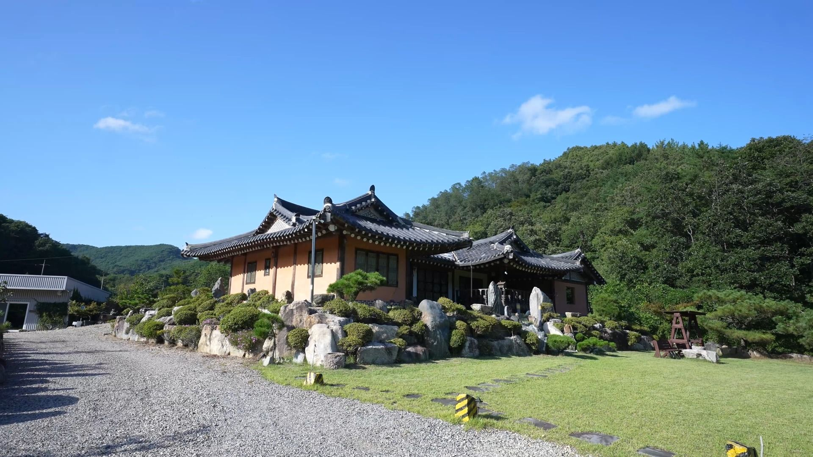
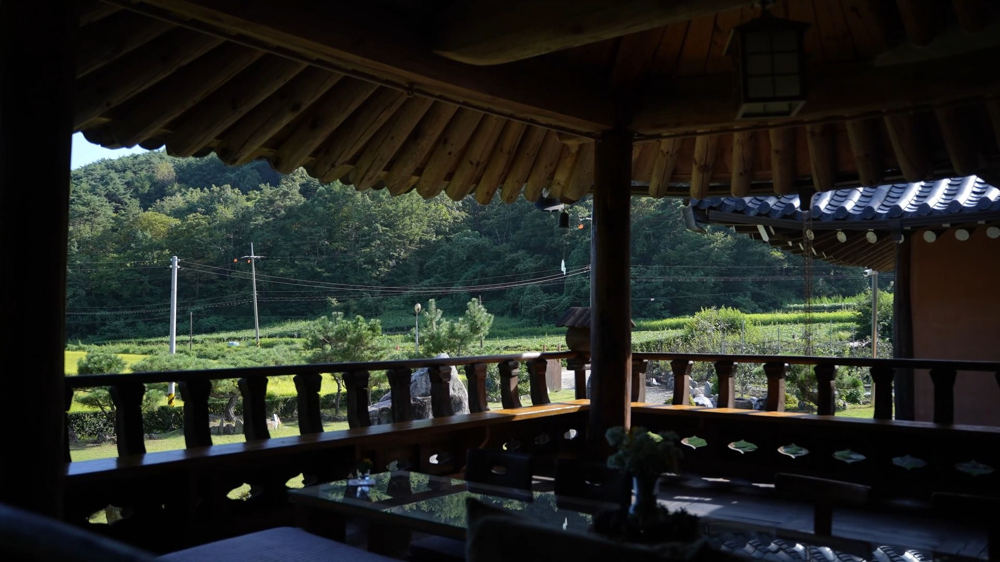
Private
하루 한 팀
독채
Garden
1,100평
잔디 마당
Ondol
참나무 군불
황토방
Breakfast
정성껏 차린
아침상 무료
Spaces
머무는 공간
흙과 나무, 불과 바람. 한옥이 오래 품어온 것들로 채운 다섯 개의 공간입니다. 공간을 누르면 사진을 더 보실 수 있어요.
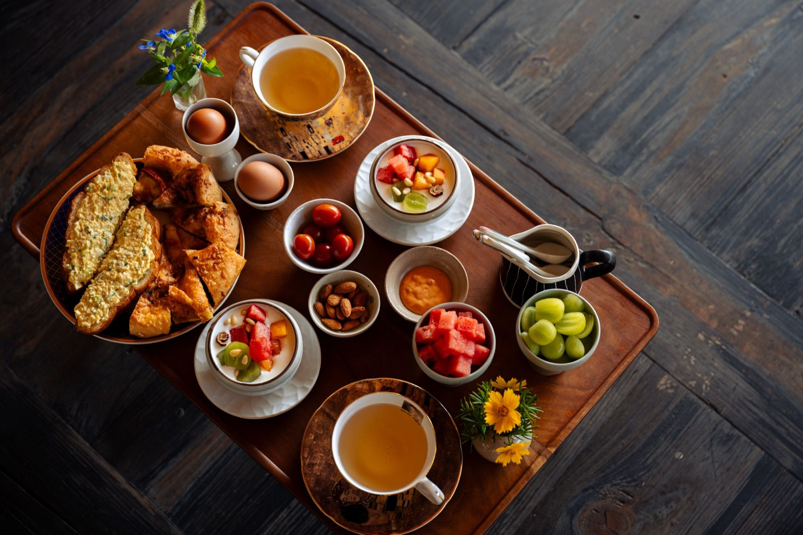
Breakfast
손님께 내어드리는
따뜻한 아침 한 끼
예부터 집에 손님이 오시면 가장 좋은 것을 내어드리고 따뜻한 밥 한 끼를 차려드렸습니다. 한존재도 그 마음을 잇고 싶었습니다.
갓 구운 천연효모 쌀빵과 제철 과일, 커피와 직접 만든 차를 아침마다 정성껏 차려드립니다. 조식 비용은 따로 받지 않습니다.
아침상 안내Garden & Greenhouse
손으로 가꾼 정원
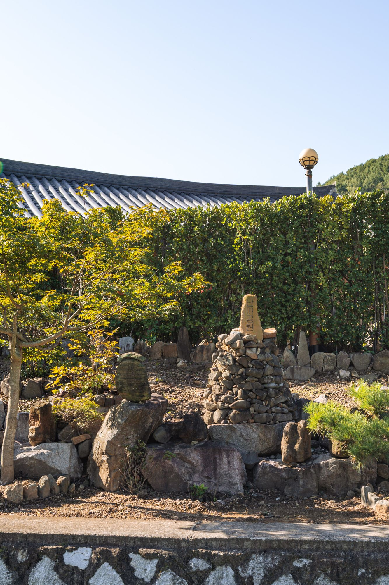
Garden
난아공원
‘난아’는 안주인의 호에서 따온 이름입니다. 숙소 뒤편, 바깥주인이 돌을 하나씩 쌓고 꽃을 심고 연못을 파며 오랜 시간 가꾸어 온 작은 공원입니다.
연못에는 미꾸라지와 물고기가 살고, 계절이 오면 연꽃이 피어납니다. 아침 산책길로 천천히 걸어보세요.
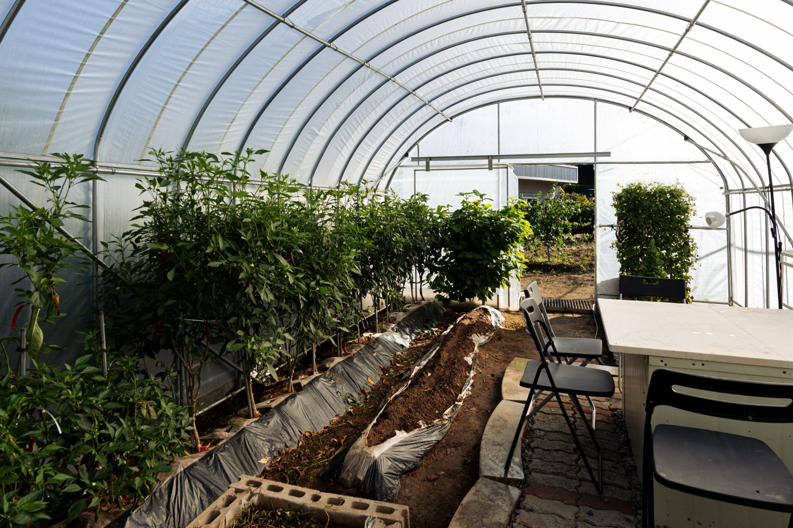
Greenhouse · Café Danmakgol
마을이 지어준
단막골 그린하우스
마을 분들이 한존재를 위해 손수 지어주신 하우스입니다. 마을 이름을 따 ‘단막골 카페’라 부르기도 합니다.
미나리와 배추, 고추가 자라는 철이면 머무는 손님께서 직접 따서 드셔도 좋습니다. 저녁 바비큐에 곁들이면 그만입니다.
텃밭 채소는 계절에 따라 달라집니다.
Seasons
계절마다 새로운 풍경
초록이 짙은 여름, 금빛으로 물드는 가을, 별이 내려앉는 밤. 같은 자리에서 매번 다른 풍경을 만납니다.
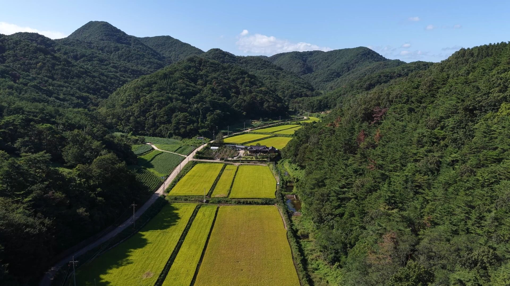
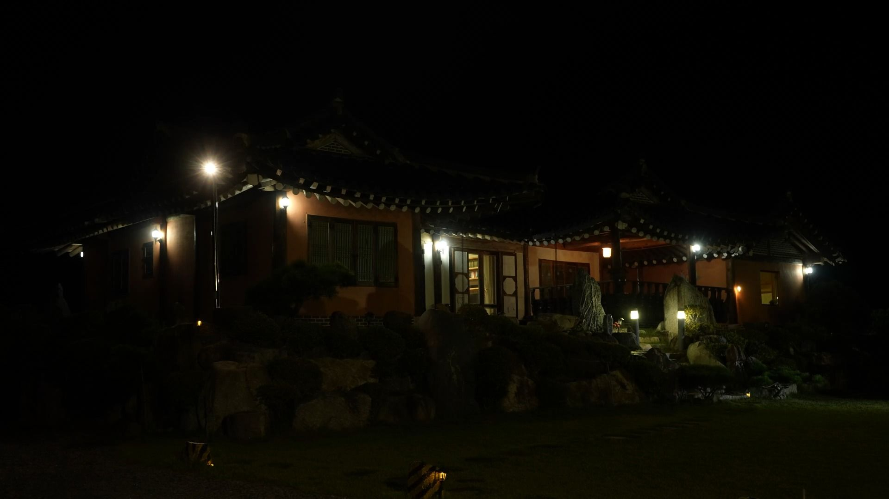
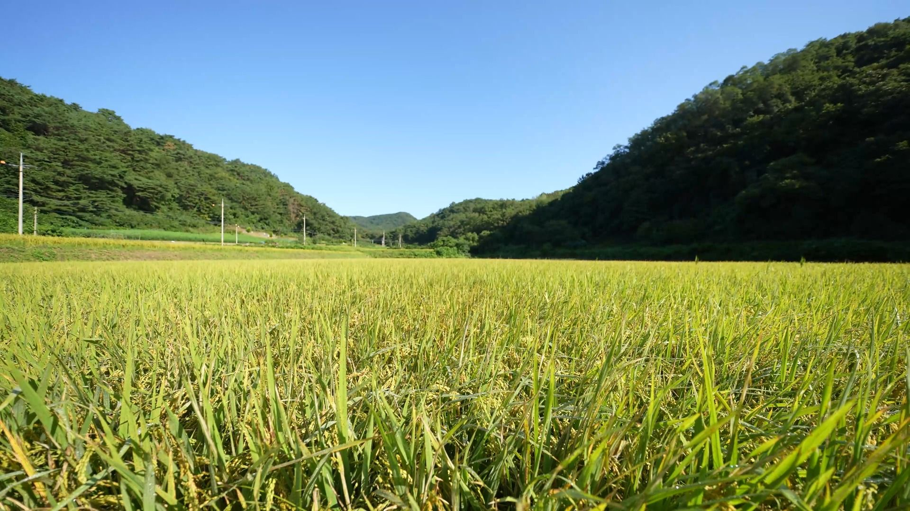
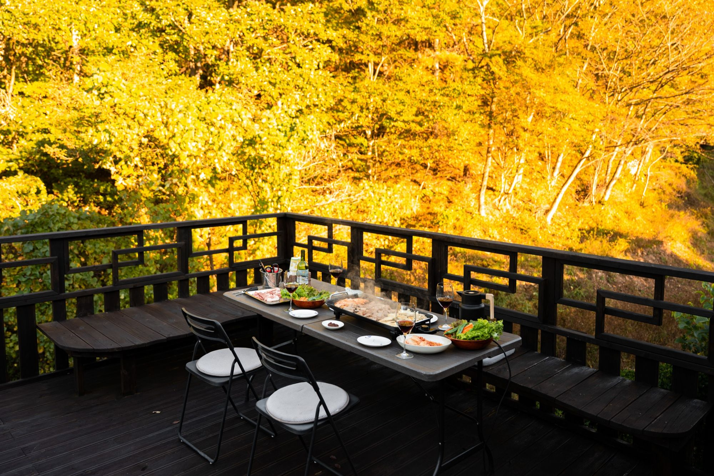
Guest Notes
머문 분들의 이야기
★★★★★
“황토방에서 건강한 하루를 보냈고, 직접 챙겨주시는 건강한 아침은 진짜 최고였습니다. 완벽한 휴식과 마음이 풍족해지는 여행을 원하신다면 여기입니다.”
★★★★★
“할머니 모시고 간다고 하니 미리 아궁이에 불도 때어주시고 인삼차도 준비해주셨어요. 이 숙소만 보고 영덕에 와도 될 정도로 너무 좋은 장소예요.”
★★★★★
“추운 겨울에도 온기가 느껴지는 온돌방에서 따뜻함을 느끼고, 바쁜 일상 속에 쉼과 고요함, 여유로움을 마구 느낄 수 있는 하루였습니다.”
에어비앤비 후기에서 일부를 옮겼습니다.
News
한존재 소식
대표님이 직접 전하는 한존재의 요즘 이야기입니다.
블로그에서 더 보기Information
이용 안내
편안한 머무름을 위해 미리 살펴봐 주세요. 궁금한 점은 언제든 문자로 편하게 물어봐 주세요.
5~6인은 침대가 있는 게스트룸을 함께 이용하실 수 있습니다 (추가 요금, 문의)
약 20° · 23° · 25° 중 원하시는 온도를 알려주세요. 여름에는 에어컨과 실링팬으로 시원하게 준비합니다.
전날까지 시간과 커피 취향(온도·맛·진하기)을 알려주세요. 커피 대신 계절 차도 준비합니다.
- 객실과 정원 모든 곳이 금연입니다 (전자담배 포함).
- 예약 인원 외 방문객과 반려동물은 입실할 수 없습니다.
- 양초·폭죽·부탄가스 등 화기는 사용할 수 없습니다.
- 소등 시간은 밤 10시입니다.
- 한지에 냄새가 배어 실내에서는 고기·생선·튀김 조리가 어렵습니다.
Nearby
영덕 둘러보기
동해 바다와 옛 마을이 가까이 있습니다. 한존재에서 차로 걸리는 시간입니다.
14분
강구항
영덕대게 거리와 항구 산책
14분
장사해수욕장
한적한 바다와 전승기념관
24분
해맞이공원
동해 일출 명소와 풍력단지
31분
괴시리 전통마을
고택이 모여 있는 옛 마을
34분
관어대 모노레일
동해가 내려다보이는 전망대
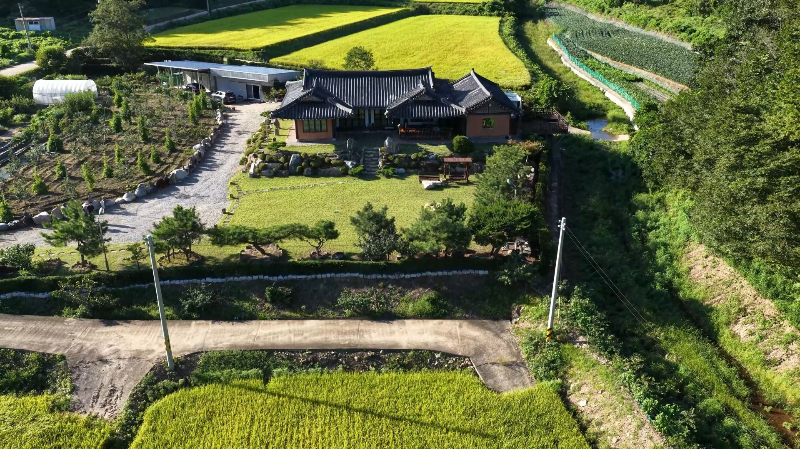
Location
오시는 길
경상북도 영덕군 남정면 상화길 42
마당 주차장에 주차 후 계단을 올라 오른쪽으로 오시면 황토방 입구입니다.
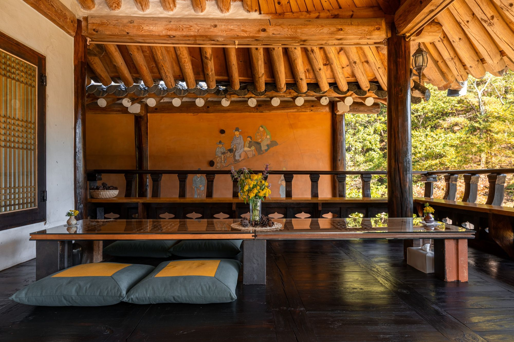